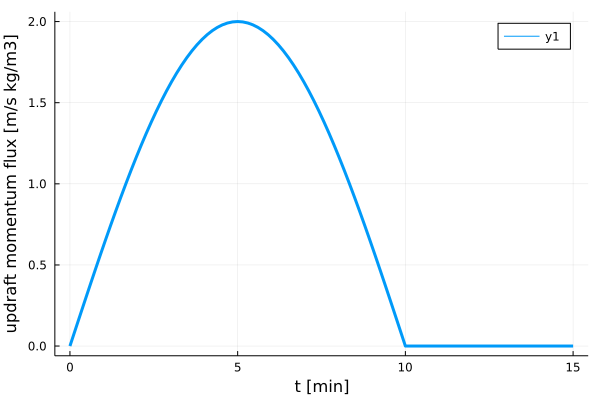

Kinematic1D.jl
Kinematic1D.jl is a single column, prescribed flow driver for testing microphysics schemes. It uses ClimaCore.jl operators and CloudMicrophysics.jl tendencies to create the numerical problem that is then solved using OrdinaryDiffEq.jl.
Simulation setup
The setup is based on the kinematic framework introduced by B. J. Shipway, A. A. Hill (2012): Vertical momentum flux is constant with height and varying in time. Density and temerature profiles are constant and defined by the initial condition, which is unsaturated. As the simulation progresses in time moisture is transported upwards, supersaturation grows in the upper part of the domain and precipitation is formed. In the second part of the simulation the vertical momentum flux is switched off, leaving only cloud microphysics tendencies acting to change the model state. Below figure shows an example prescribed vertical momentum as a function of time.
using Plots
include("../../src/helper_functions.jl")
t_range = range(0, 15 * 60, length=100)
w1 = 2.0
t1 = 600.0
plot(t_range / 60.0, [ρw_helper(t, w1, t1) for t in t_range], linewidth=3, xlabel="t [min]", ylabel="updraft momentum flux [m/s kg/m3]")
Changes to CliMA defaults
One of the goals of Kinematic1D.jl is to test against PySDM and the particle-based implementation of the kinematic model available in PySDM-examples. As a result, some CliMA constants were changed from their default values to better match PySDM:
| symbol | definition | units | default value | new value |
|---|---|---|---|---|
| MSLP | Mean sea level pressure | $Pa$ | $101325$ | $10^{5}$ |
| grav | Gravitational acceleration | $m/s^2$ | $9.81$ | $9.80665$ |
| gas_constant | Universal gas constant | $J/mol/K$ | $8.3144598$ | $8.314462618$ |
| kappa_d | Adiabatic exponent for dry air (2/7) | $-$ | $0.28571428571$ | $0.2855747338575384$ |
| cp_v | Isobaric specific heat of water vapor | $J/kg/K$ | $1859$ | $1850$ |
| molmass_dryair | Molecular mass of dry air | $kg/mol$ | $0.02897$ | $0.02896998$ |
| molmass_water | Molecular mass of water | $kg/mol$ | $0.01801528$ | $0.018015$ |
| qliqthreshold | Cloud liquid water autoconversion threshold | $kg/kg$ | $0.0005$ | $0.0001$ |
Comparison with PySDM
TODO